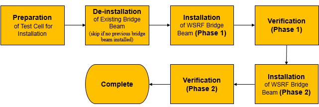

Bridge beam installation on Accretech UF3000 EX prober - Overview
This topic outlines the steps needed to install Direct Probe Bridge Beam on Accretech UF3000 wafer prober and describes the preparatory procedures that must be carried out before going ahead with the installation.
About this task
This installation guide is applicable to the installation of the following V93000 Direct Probe bridge beam products on the Accretech UF3000EX series:
- E8016BBWS (V93000 Bridge Beam Direct Probe for WSRF and PMUX)

Before you begin
Unpack the WSRF bridge beam and verify the contents of the package. The following items are included:
- E8016BBWS (WSRF Bridge Beam)
- 8 off M8 Socket Head Cap Screws
- 2 off Accretech Sensor Adapter Cable
The following figure shows the Bridge Beam installation area on the wafer prober. The prober chuck has already been moved out of the way, ready for the installation of the Bridge Beam.

- Torque wrench (set to 19 Nm)
- 6 mm box wrench to fit torque wrench
 8 mm Allen wrench
8 mm Allen wrench Size 3 Pozidriv screwdriver
Size 3 Pozidriv screwdriver T30 Torx screwdriver
T30 Torx screwdriver
What to do next
If another bridge beam is mounted on the wafer prober, remove this first. For the de-installation instructions refer to Deinstalling Direct-Probe bridge beam from Accretech UF3000 EX wafer prober. Otherwise skip this step and go to Bridge beam installation on Accretech UF3000 EX - Phase 1 to commence the installation of the WSRF bridge beam.
Refer to the Accretech User Manual to turn on options to enable the sensors located within the Bridge Beam.
When the installation has been completed and verified, load the DUT board on the wafer prober, see Loading a DUT board on the Accretech UF3000 EX wafer prober.
Functional changes
- Introduced in SmarTest 7.4.1